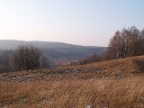

Германо-российский проект
"Концепция особо охраняемой природной территории в российской части Роминтской пущи"

В настоящее время идёт международный проект по планированию охраняемой природной территории в российской части Роминтской пущи - Красного леса, которая представляет единый природно-культурный комплекс на крайнем юго-востоке Калининградской области.
Реализация проекта осуществляется в тесном сотрудничестве с российскими и немецкими организациями. Ответственным за реализацию проекта с немецкой стороны является Фонд охраны природы им М. Зукко (Michael Succow Stiftung zum Schutz der Natur), поддерживаемый следующими партнерами:
· Калининградское региональное общественное учреждение «Виштынецкий эколого-исторический музей», Калининград (Россия)
· БТЕ турисмусменеджмент, Берлин (Германия)
· Ландшафтный парк Пущи Роминской, Житкеймы (Польша),
· Ассоциация «Арбайт унд лебен», Магдебург (Германия)
· Институт экологии Юнгмайер ГмбХ, Клагенфурт (Австрия)
· БТЕ турисмусменеджмент, Берлин (Германия)
· Ландшафтный парк Пущи Роминской, Житкеймы (Польша),
· Ассоциация «Арбайт унд лебен», Магдебург (Германия)
· Институт экологии Юнгмайер ГмбХ, Клагенфурт (Австрия)
Запланировано три фазы реализации проекта:
Первая фаза проекта (2007-2008 гг.)
Исследование возможностей развития крупной трансграничной особо охраняемой природной территории "Роминтская пуща" Калининградская область/Россия и Польша.
Исследование возможностей развития крупной трансграничной особо охраняемой природной территории "Роминтская пуща" Калининградская область/Россия и Польша.
Отчёт о реализации первой фазы проекта
Вторая фаза проекта (2009-2011 гг.)
В рамках второй фазы проекта предполагается разработать детальную концепцию охраны и развития российской части Роминтской пущи. Данный проект предусматривает совместно с административными органами и общественностью создать основы для дальнейшего развития российской части Роминтской пущи.
Эта, как и предыдущая фаза проекта, финансируется Немецким федеральным экологическим фондом.
Основными задачами этой фазы являются:
· Углубленный экологическийц и социоэкономический анализ землепользования, потенциала развития и возможных конфликтов пользования с учетов планирующейся ООПТ;
· Анализ социоэкономических последствий создания ООПТ и оценка потенциала создания рабочих мест;
· Определения целей и мероприятий развития;
· Разработка концепции природоохранного лесопользования и охоты;
· Разработка детальной концепции зонирования ООПТ;
· Концепция необходимой администрации ООПТ;
· Разработка концепции развития туризма, в частности, структуры дорог и троп, управления туристическими потоками, планирование Информационного центра, конкретизация и согласование туристических услуг;
· Разработка концепции и проведение первых мероприятий по экологическому образованию;
· Создание фонда для реализации некоторых первых аспектов концепции развития туризма.
· Углубленный экологическийц и социоэкономический анализ землепользования, потенциала развития и возможных конфликтов пользования с учетов планирующейся ООПТ;
· Анализ социоэкономических последствий создания ООПТ и оценка потенциала создания рабочих мест;
· Определения целей и мероприятий развития;
· Разработка концепции природоохранного лесопользования и охоты;
· Разработка детальной концепции зонирования ООПТ;
· Концепция необходимой администрации ООПТ;
· Разработка концепции развития туризма, в частности, структуры дорог и троп, управления туристическими потоками, планирование Информационного центра, конкретизация и согласование туристических услуг;
· Разработка концепции и проведение первых мероприятий по экологическому образованию;
· Создание фонда для реализации некоторых первых аспектов концепции развития туризма.
Третья фаза проекта (с 2012 г.)
Планируется, что третья проектная фаза будет реализовываться по результатам рассмотрения заявки в ЕС. В рамках этой фазы планируется создание инфраструктуры и администрации ООПТ. Долгосрочной целью является создание трансграничной ООПТ между Россией, Польшей и Литвой.

Контактное лицо в Калининграде:
Алексей Соколов, КРОУ Виштынецкий эколого-исторический музей
Тел.: 8-9062-126823, эл. почта: wystynez@bk.ru
Алексей Соколов, КРОУ Виштынецкий эколого-исторический музей
Тел.: 8-9062-126823, эл. почта: wystynez@bk.ru